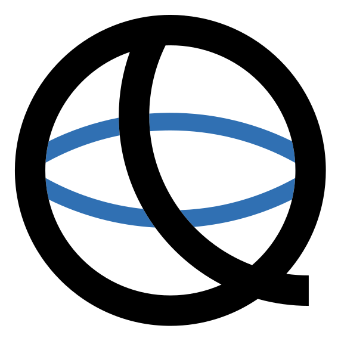

MQSF Logos
Download our logo for event announcements, presentations and other MQSF materials. Use SVG for sharp results at any size, or PNG for applications that do not accept SVG.
Full Logo
The complete logo with the event name. Choose a transparent background or the white background for use on dark surfaces. The checkerboard is only part of this preview.
Open full logo image to copy


Transparent PNG: 1949 × 1096 pixels
White-background PNG: 1200 × 675 pixels

Q Mark
The compact Q mark for places where the full event name is already visible.
Open Q mark image to copy
PNG: 572 × 572 pixels
Using the Logos
Keep the original colors and proportions, leave clear space around the logo and use a light background so every part stays visible.
To copy an image, open it using the link above, then right-click and choose “Copy Image”. On a phone or tablet, touch and hold the image to show the available copy or save options.